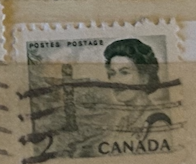
| SOURCE | TITLE| IMAGE MATCH | click to source page |
| eBay | Canada - 1970 Centenary Celebration | eBay | 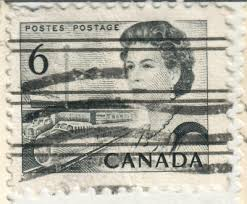 |
| eBay | CANADA, Queen Elizabeth II Blue - 6 Cent Stamp | eBay | 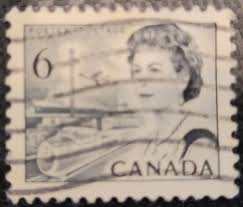 |
| eBay | 454 VF CV $15.00 Canada Mint | eBay |  |
| Bob Shop | Canada - 1967 CANADA THE 100TH ANNIVERSARY CELEBRATION for sale in Cape Town (ID:670668664) | 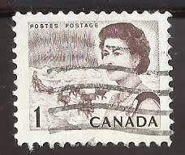 |
| stampphenom.com | Canada 1967 Queen Elizabeth II, northern lights and dog sled team – StampPhenom |  |
| eBay | Canada, 1 cent Stamp, # 454 Northern Lights, 1967 Used Centennial TK362* | eBay | 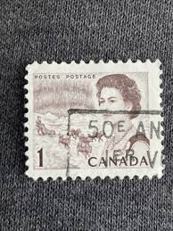 |
| Todocolección | 1967 - canada - isabel ii - aurora boreal y tri - Buy Antique stamps of Canada on todocoleccion | 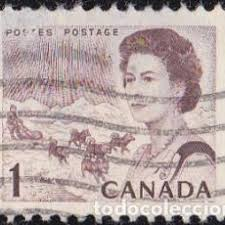 |
| eBay | Canada - 1967 - The 100th Anniversary Celebration - Queen Elizabeth, Northern Li | eBay | 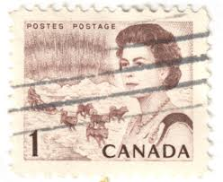 |
| eBay | CANADA STAMP MNH [SALE] [Choose 10pc of MINT is $3.5] unused WM7272 | eBay |  |
| eBay | VINTAGE 1967 Canada Centennial Commemorative Stamp Box Queen Elizabeth II | eBay |  |
| TouchStamps | Stamp: QE II, transport (Canada 1970) - TouchStamps |  |
| eBay | CANADA Postage ~ Queen Elizabeth II ~ Green 2₵ Stamp ~ Used/Posted ~ 1953 ~ 06 | eBay | 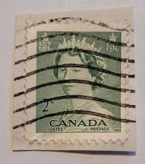 |
| eBay | Canada 1c Postage Stamp Sled Dogs | eBay | 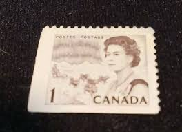 |
| eBay | CANADA SCOTT # 466xx PAIR, MINT, OG, NH, VERY FINE, GREAT PRICE! | eBay |  |
| eBay | 🍁X-455 Centennial 2 cent block of 4, 2xMNH 2xMH PRECANCEL Cat $160 used Canada | eBay | 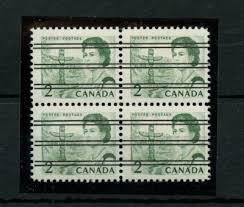 |
| eBay | Canada Scott #543 7c Stamp - 1971 Queen Elizabeth II QEII (Mint) X40 | eBay | 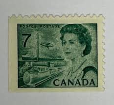 |
| eBay | Canada Scott #468 5c Stamp - 1967 Queen Elizabeth QEII (Mint) X40 | eBay | 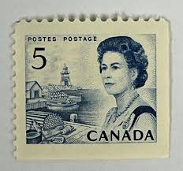 |
| eBay | CANADA STAMP MNH Commemorative MINT unused WM0288 | eBay |  |
| eBay | CANADA 1967 QUEEN ELIZABETH FV FACE 1 CENT 100% OFF CENTER SHIFTED STAMP ERROR | eBay |  |
| eBay | Canada Scott 543 LL Pl #1 MNH - 1967-72 Centennial Issue | eBay |  |
| eBay | Canada sc#454 Centennial - Queen Elizabeth & Northern Lights, UL CBN N°4 Mint-NH | eBay | 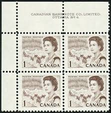 |
| eBay | Canada 3 Cent Stamp 1967 Scott 466 Queen Elizabeth II MNH Full Gum Unused | eBay | 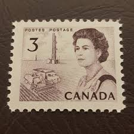 |
| eBay | Canada 1967-70 QE Definitives 2c,3c,6c One Bar Tag Errors MNH | eBay | 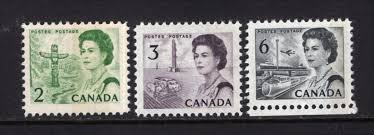 |
| eBay | Canada Scott 458 UL Pl #2 MNH - 1967-72 Centennial Issue | eBay | 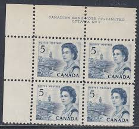 |
| eBay | Canada Booklet #63b Very Fine Never hinged Booklet With Vertical & Horizontal | eBay | 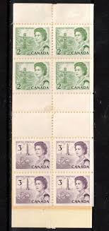 |
| eBay | Canada, nice pair of MNH QE stamps | eBay | 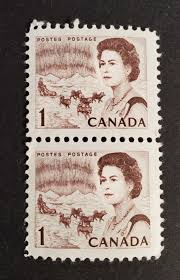 |
| eBay | 1912 CHINA TOBACCO Cigarette TAX REVENUE Fiscal 2$ + HongKong Canada RARE STAMPS | eBay |  |
| The Itty Bitty Stamp Company | Canada Scott # O-37 MNH – The Itty Bitty Stamp Company | 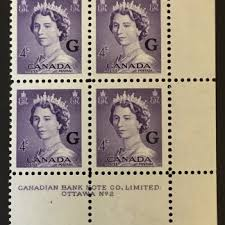 |
| eBay | Canada - 1971 - Centenary Celebration - 7 Cents - Used - #1 | eBay | 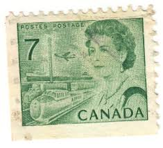 |
| eBay | Moraine Lake Postcard Alberta, Canadian Rockies Valley of the Ten Peaks VTG | eBay |  |
| eBay | Canada - 1967 - The 100th Anniversary Celebration - 5 C - Used - #1 | eBay | 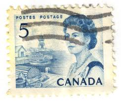 |
| eBay Australia | 2x CANADA 1967 CANADIAN QUEEN ELIZABETH FACE 10 CENT MNH STAMP LOT MARGIN ERROR | eBay Australia | 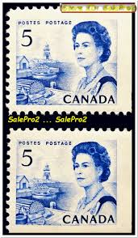 |
| eBay | CANADA LOT OF 3 PARTIALLY FULL MINT STAMP BOOKLETS FEATURING QUEEN ELIZABETH II | eBay | 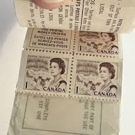 |
| eBay | CENTENNIAL #468i- 5¢ ** AWESOME IMAGE PRINT GUM SIDE ** SF (aka LF) STRIP 4 SUP | eBay |  |
| eBay | Canada Scott 454piv LL Cnr Blk MNH - 1967-72 Centennial Issue | eBay |  |
| eBay | Canada #BK66b MNH Booklet 1971 Centennial Type II Black Prestamped [543a] | eBay | 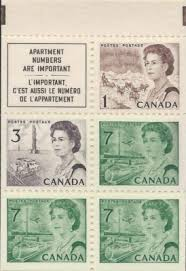 |
| eBay | CANADA 1977 CANADIAN QUEEN ELIZABETH II MINT FV FACE 48 CENT MNH STAMP BLOCK | eBay | 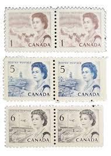 |
| eBay | Canada 1971 Centennial Booklet UNI #BK69f - Cover: Royal Mail Wagon 1926 | eBay | 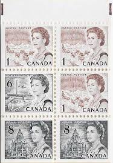 |
| eBay | 2x CANADA 1967 CANADIAN QUEEN ELIZABETH FACE 10 CENT MNH STAMP LOT MARGIN ERROR | eBay |  |
| eBay | pk03741:Stamps-Canada #455a Centennial Queen 4x2,4x3 cent Booklet Pane - MNH | eBay | 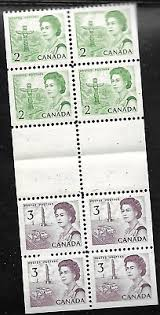 |
| eBay | Canada 1967-73, # 466, 3c Prairies coil stamp MNH, Mi 400C 5€ | eBay | 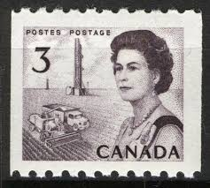 |
| eBay | Canada Scott 460 LL Pl #3 MNH - 1967-72 Centennial Issue | eBay |  |
| eBay | Canada #460Pii Very Fine Never Hinged Incredible Perforation Shift Variety | eBay |  |
| eBay | Canada 1c centennial SC 454 MNH plate block 4 matched set | eBay | 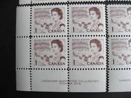 |
| eBay | Canada Stamps Scott #454 & 460, Mint Never Hinged, Booklet Pane | eBay | 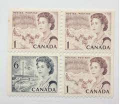 |
| eBay | 1967-73 Canada SC# 543,543p - Queen Elizabeth II Centennial Lot 599a M-NH | eBay | 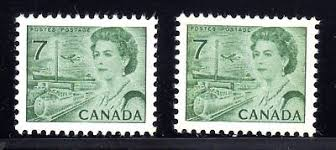 |
| eBay | 1971 Canada 5 Cent Centennial Stamp | eBay |  |
| eBay | Canada #458 MNH Block (4 stamps) QEII | eBay | 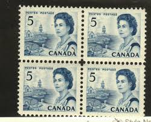 |
| vividagallery.com | Canada Queen Elizabeth II Transportation Infrastructure Orange Postage Stamp Ornament by Vivida Gallery - Vivida Gallery | 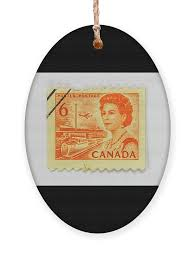 |
| eBay | Canada - 1967 - 1971 Centenary Celebration | eBay | 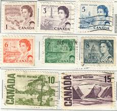 |
| eBay | CANADIAN FORCES POST OFFICE CANCEL "CFPO-108" | eBay | 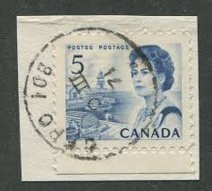 |
| eBay | Canada - 1971 - Centenary Celebration - 7¢x2 - #2149 | eBay | 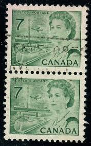 |
| eBay | Canada Postage ~ Queen Elizabeth II ~ Green 2¢ Stamp ~ Cancelled/Posted ~ 04 | eBay |  |
| Mystic Stamp | 466//68B - 1967-70 Canada - Mystic Stamp Company | 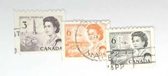 |
| eBay | CANADA SCOTT # 466 PAIR, MINT, OG, TOP STAMP LH, BOTTOM STAMP NH, GREAT PRICE! | eBay | 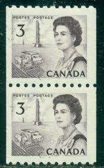 |
| Etsy | Stamp Art, Brown, Queen Elizabeth II, Canada, 1 Cent, Used Stamps - Etsy Canada | 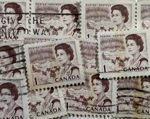 |
| eBay | Canada, Postage Stamp, #543 (14 ea) Mint NH, 1971 (AC) | eBay | 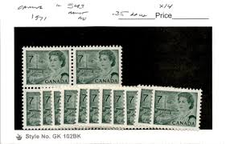 |
| eBay | CANADA SCOTT # 468B STRIP OF 4, MINT, OG, NH, GREAT PRICE! | eBay | 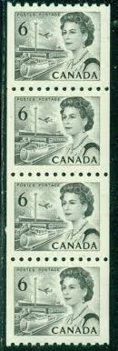 |
| eBay | Canada 1967-73, # 467, 4c Seaway coil stamp MNH, Mi 401C 2,5€ | eBay | 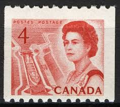 |
| eBay | Canada Stamp Scott #543, 7c, Definitive 1971, Block of 4, OG, MNH | eBay | 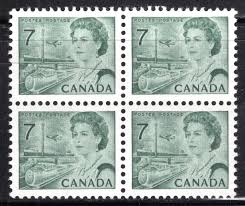 |